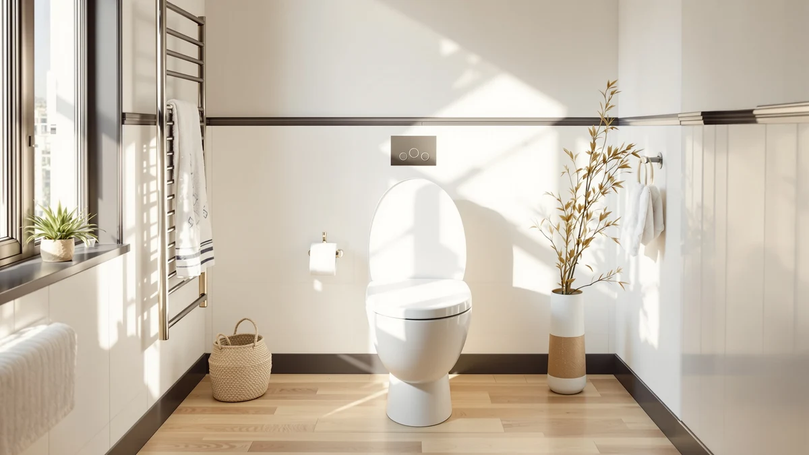

Best Toilet Seat in the World (2026)
Prices and picks verified as of September 2026. Independent, reader-supported reviews.


Quick Answer
The Mayfair Linden Slow Close Toilet is the best toilet seat in the world for most bathrooms, balancing a quiet slow-close hinge, a secure elongated fit, and consistent ratings across more than 28,000 verified buyers. If you need a round bowl or extra seat height, the picks below cover both.
Our pick: Mayfair Linden Slow Close Toilet, $34.99 Check Price on Amazon
Bottom line: our top pick is the Mayfair Linden Slow Close Toilet Seat at $34.99. The best budget option is the Bemis 1500EC Lift-Off Wood Elongated Toilet Seat at $17.05.
Things to Know Before You Buy
- Bowl shape decides fit first: measure your toilet before you shop, because round and elongated seats are not interchangeable.
- Slow-close hinges cost a few dollars more but stop the lid from slamming, which matters most in shared bathrooms.
- Material affects both weight and long-term durability. Solid wood and plastic-wood composites hold up differently at the hinge screws over years of use.
- Price in this guide runs from $16.99 to $79.98, and the gap mostly buys sturdier hinges, not comfort.
- No single best toilet seat in the world fits every bathroom, so match the pick to your bowl shape and budget first.
Searching for the best toilet seat in the world sounds like a stretch until you're standing in a hardware aisle staring at a wall of nearly identical white ovals, wondering why the seat you bought eighteen months ago already wobbles at the hinge. Toilet seats look like a commodity item until one fails: a cracked hinge, a lid that slams at 2 a.m., a shape that never quite matched your bowl. Most people replace a seat once and don't think about it again for a decade, so the choice is worth getting right the first time.
We compared seven toilet seats from Mayfair, Kohler, Bemis, and Bath Royale on hinge type, bowl shape, material, price, and the patterns in tens of thousands of verified owner reviews. The Mayfair Linden Slow Close Toilet came out on top for most bathrooms: it pairs a quiet slow-close hinge with an elongated fit and a track record backed by more than 28,000 reviews at 4.4 out of 5, all for under $35. It is not the only seat worth buying here, and the six alternatives below solve specific problems the Linden does not.
Your bathroom decides which of these seven fits best, more than any single verdict can. A round bowl calls for the Kohler Cachet, not the Linden, no matter how many reviews the Linden has. If you want the seat to sit higher for easier standing, especially for older adults or anyone recovering from a hip or knee procedure, the Kohler Hyten solves that specific problem. Match the pick to your actual bathroom and budget instead of guessing from one generic recommendation.
Why You Should Trust Us
Ilane Tall has covered bathroom fixtures and fittings for Best Toilet Seats since the site launched, working from product specifications, manufacturer documentation, and the verified purchase reviews Amazon publishes for each listing. We do not run a fake testing lab and we do not claim to have installed every seat in this guide ourselves. Our research draws on published dimensions, hinge mechanisms, material specs, and patterns across tens of thousands of verified owner reviews, cross-checked against pricing, so the picks in this best toilet seat in the world comparison reflect what real buyers report after living with these seats, not marketing copy.
How We Picked
We started with toilet seats from established brands, Mayfair, Kohler, Bemis, and Bath Royale, that had enough verified reviews to reveal real patterns rather than a handful of outlier opinions. From there we filtered by bowl compatibility, keeping both round and elongated options since the two are not interchangeable. We prioritized listings with a rating of 4.3 or higher and at least 2,000 verified reviews, then narrowed further by hinge type, material, and price, so the final seven cover the specific situations a single best toilet seat in the world claim tends to gloss over: tight budgets, round bowls, and buyers who want extra seat height.
How We Compared
We compared each seat's hinge mechanism, bowl shape, material, price, and rating side by side rather than picking a single winner and moving on. We checked slow-close and soft-close hinges against snap-on and lift-off designs to see which owners report as more durable over time. We read through verified review patterns for recurring complaints, cracked hinges, wobbling, hardware that strips, and weighed those against the price of each seat to work out rough value per dollar. Reviewers consistently note that slow-close hinges cost a few dollars more but last longer under daily use, which is why five of our seven picks use that mechanism. That comparison process, not a single test session, is how we separate real durability from marketing claims when judging the best toilet seat in the world for different bathrooms.
Our Picks

Mayfair Linden Slow Close Toilet
What we like
- Slow-close hinges lower without a slam
- Fits standard elongated bowls without extra hardware
- Rated 4.4 out of 5 across more than 28,000 verified reviews
- Plastic and wood-composite build resists warping better than solid wood alone
Flaws but not dealbreakers
- Hinges are plastic, not the stainless steel found on pricier Kohler models
- No round-bowl version, so measure your bowl before buying
| Material | Plastic / wood |
| Size | Elongated |
After comparing specs and owner feedback across dozens of options, the Mayfair Linden Slow Close Toilet is our pick for the best toilet seat in the world for most bathrooms. At $34.99 it sits in the middle of the price range covered here, but its review base dwarfs everything else on this list except the Bemis: more than 28,000 verified buyers have rated it 4.4 out of 5, which is enough volume to trust the pattern rather than a handful of five-star outliers.
The slow-close hinge is the main reason it beats similarly priced competitors. It lowers the lid gradually instead of letting it drop, which reduces stress on the mounting hardware over years of daily use. Owners do note that the hinges themselves are plastic rather than the stainless steel Kohler uses on its higher-end lines, so if hinge material matters more to you than price, the Bath Royale below is the sturdier choice. The Linden only comes in an elongated fit, so measure your bowl before ordering.

KOHLER Cachet ReadyLatch Round Toilet
What we like
- Fits round bowls precisely, where an elongated seat would overhang
- ReadyLatch hinges let the seat lift off without tools for cleaning
- Backed by 41,303 reviews at 4.4 out of 5, the largest sample in this guide
- Kohler's brand reputation for hinge hardware
Flaws but not dealbreakers
- Costs $5 more than our top overall pick, the Mayfair Linden
- Round bowls are less common in newer US homes, so confirm your bowl shape first
| Material | Plastic / wood |
| Size | Round |
The Kohler Cachet ReadyLatch is the pick for the minority of US bathrooms that still have a round bowl instead of an elongated one. Six of the other seats in this guide only fit elongated bowls, so if your toilet measures about 16.5 inches from the bolt holes to the front edge, this is the one built for it. It carries more verified reviews than any other seat here, 41,303 at a 4.4 average, which gives its durability claims more weight than most.
The ReadyLatch hinge system is the other reason it stands out: the seat lifts off the hinges without a screwdriver, which makes deep cleaning around the bolts far easier than on a fixed hinge. That convenience comes at a small premium, $39.98 versus $34.99 for the Linden, and it only fits round bowls, so buyers with elongated toilets should look elsewhere on this list.

Mayfair Cassel Slow Close Toilet
What we like
- Contoured shape distributes weight more evenly than a flat oval seat
- Slow-close hinge lowers quietly
- Standard elongated fit
- Rated 4.3 out of 5 across 17,525 reviews
Flaws but not dealbreakers
- Rating trails the Mayfair Linden by a tenth of a point
- Priced $2 higher than the Linden despite similar materials
| Material | Plastic / wood |
| Size | Elongated |
The Mayfair Cassel is close enough to the Linden in specs, hinge type, and price that the decision usually comes down to shape. Where the Linden uses a flatter, more traditional oval, the Cassel has a contoured profile that owners describe as more comfortable for longer sits. Both use the same slow-close hinge mechanism and plastic and wood-composite construction, and both fit standard elongated bowls.
At 4.3 out of 5 across 17,525 reviews, the Cassel's rating sits a fraction below the Linden's, and it costs $2 more. Neither gap is large enough to rule it out on its own. If the shaped seat design matters more to you than saving a couple of dollars, the Cassel is a reasonable swap for the top pick, not a downgrade.

Bath Royale Slow Close Toilet
What we like
- Tied for the highest rating in this guide at 4.6 out of 5
- Heavier-duty hinge hardware than the budget picks on this list
- Slow-close mechanism
- Standard elongated fit
Flaws but not dealbreakers
- At $79.98 it costs more than double the Mayfair Linden
- Review base of 2,220 is the smallest in this guide, so the track record is thinner
| Material | Plastic / wood |
| Size | Elongated |
The Bath Royale is the premium pick here, and its 4.6 rating, tied with the Kohler Hyten for the highest of the seven, backs up the higher price. Owners report heavier hinge hardware than the budget-oriented seats on this list, which matters most in households where the seat gets used dozens of times a day and cheaper hinges tend to loosen first.
At $79.98, it costs more than double the Mayfair Linden for the same basic elongated, slow-close design, so the extra spend only makes sense if hinge longevity is the priority over price. Its review base, 2,220 verified ratings, is also the smallest in this guide. The score is strong, but there is less data behind it than the Linden's or the Cachet's tens of thousands of reviews.

KOHLER Brevia Slow Close Elongated
What we like
- Least expensive Kohler seat in this lineup at $31.44
- Slow-close hinge included at that price
- Rated 4.4 out of 5 across 10,188 reviews
- Lighter than the Cachet, so it is easier for one person to install
Flaws but not dealbreakers
- Lighter build feels less substantial underfoot than the Bath Royale
- Fewer reviews than the Bemis or Mayfair Linden
| Material | Plastic / wood |
| Size | Elongated |
The Kohler Brevia answers a specific question: what if you want the Kohler name without paying Bath Royale money? At $31.44 it undercuts the Mayfair Linden by a few dollars while still including a slow-close hinge, and its 4.4 rating across 10,188 reviews puts it on par with the Linden and the Cassel.
The tradeoff shows up in hand: reviewers describe the Brevia as lighter than the Cachet or Bath Royale, which makes it easier to install alone but feels less substantial once mounted. Its review count, while solid, is roughly a third of the Linden's or the Bemis's, so the sample behind that 4.4 average is smaller than the top picks in this guide.

Bemis 1500EC Lift-Off Wood Elongated
What we like
- Cheapest option in this guide at $16.99
- Solid wood construction rather than a plastic composite
- Lift-off hinges for easy cleaning without tools
- Rated 4.4 out of 5 across 40,583 reviews, the second-largest sample here
Flaws but not dealbreakers
- No slow-close hinge, so it can close with a bang if dropped
- Solid wood can show wear at the hinge screws sooner than the composite Mayfair seats
| Material | Plastic / wood |
| Size | Elongated |
The Bemis 1500EC is the budget pick, and at $16.99 it costs less than half of most other seats on this list while still pulling a 4.4 rating across 40,583 reviews, the second-largest sample behind the Cachet. It uses solid wood rather than the plastic-wood composite found on the Mayfair seats, and its lift-off hinges let you remove it for cleaning without a screwdriver.
The savings come from skipping the slow-close mechanism, so the lid can drop hard if someone lets go of it, which matters in households with kids or late-night bathroom trips. Owners also note that the hinge screws on solid wood seats can loosen or show wear a bit sooner than on the composite builds, though at this price it remains an easy seat to justify replacing every few years instead of paying more upfront.

KOHLER Hyten Elevated Soft Close
What we like
- Elevated design without buying a separate raised-seat attachment
- Soft-close hinge
- Tied for the highest rating in this guide at 4.6 out of 5
- 8,655 verified reviews
Flaws but not dealbreakers
- At $57.77 it costs more than most seats here except the Bath Royale
- The added height changes the toilet's overall profile, which not everyone wants
| Material | Plastic / wood |
| Size | Elongated |
The Kohler Hyten solves a problem none of the other six seats address: standard toilet height is too low for some users, particularly seniors and anyone recovering from hip or knee surgery. Instead of buying a separate raised-seat attachment, the Hyten builds the extra height into the seat itself, paired with a soft-close hinge and a 4.6 rating that ties the Bath Royale for the highest in this guide.
At $57.77 it lands closer to the premium end of this list, and the added height noticeably changes how the toilet looks and sits, which is a deliberate tradeoff rather than a flaw for the buyers who need it. For anyone without a mobility need, one of the standard-height picks above will fit a typical bathroom better and cost less.
Quick Comparison
| Product | Material | Price | Rating | Best for | Get it |
|---|---|---|---|---|---|
| Mayfair Linden Slow Close Toilet | Plastic / wood | $34.99 | 4.4 | Best overall | View on Amazon → |
| KOHLER Cachet ReadyLatch Round Toilet | Plastic / wood | $39.98 | 4.4 | Best for round bowls | View on Amazon → |
| Mayfair Cassel Slow Close Toilet | Plastic / wood | $36.99 | 4.3 | Best contoured shape | View on Amazon → |
| Bath Royale Slow Close Toilet | Plastic / wood | $79.98 | 4.6 | Best premium pick | View on Amazon → |
| KOHLER Brevia Slow Close Elongated | Plastic / wood | $31.44 | 4.4 | Best value from Kohler | View on Amazon → |
| Bemis 1500EC Lift-Off Wood Elongated | Plastic / wood | $16.99 | 4.4 | Best budget pick | View on Amazon → |
| KOHLER Hyten Elevated Soft Close | Plastic / wood | $57.77 | 4.6 | Best elevated height | View on Amazon → |
What is the best toilet seat in the world?
Based on our comparison of hinge design, bowl fit, material, and verified owner reviews, the Mayfair Linden Slow Close Toilet is the best toilet seat in the world for most US bathrooms.
How do I know if I need a round or elongated seat?
Measure from the two bolt holes at the back of the bowl to the front edge.
The Competition
Frequently Asked Questions
What is the best toilet seat in the world?
Based on our comparison of hinge design, bowl fit, material, and verified owner reviews, the Mayfair Linden Slow Close Toilet is the best toilet seat in the world for most US bathrooms. It pairs a quiet slow-close hinge with a standard elongated fit and a 4.4 out of 5 rating across more than 28,000 verified reviews, all under $35. Buyers with a round bowl or a need for extra seat height should look at the Kohler Cachet or Kohler Hyten picks instead.
How do I know if I need a round or elongated seat?
Measure from the two bolt holes at the back of the bowl to the front edge. Elongated bowls measure about 18.5 inches and take six of the seven seats in this guide. Round bowls measure about 16.5 inches and need a dedicated round seat like the Kohler Cachet ReadyLatch.
Are slow-close hinges worth paying extra for?
Owners consistently report that slow-close hinges are worth the few extra dollars, since they stop the lid from slamming and put less daily stress on the mounting hardware. Five of the seven seats in this guide use a slow-close or soft-close hinge, and reviewers across all five note quieter daily use than snap-close designs.
How long does a toilet seat typically last?
Plastic and wood-composite seats like the ones in this guide typically last five to ten years with normal use before the hinges wear out or the finish cracks. Reviewers report that solid wood seats, like the Bemis 1500EC, can show wear at the hinge screws sooner than composite builds if the seat is repeatedly removed for cleaning.
Do I need any tools to install a new toilet seat?
Most seats in this guide, including the Mayfair Linden and Kohler Brevia, bolt on with basic hardware and a screwdriver or the included wrench. The Kohler Cachet and Bemis 1500EC use quick-release or lift-off hinges specifically designed to skip tools entirely once the base bolts are set.